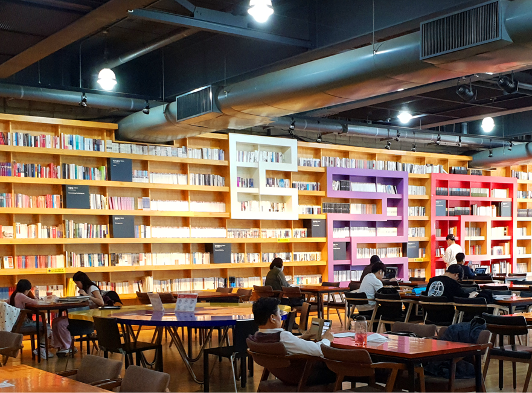
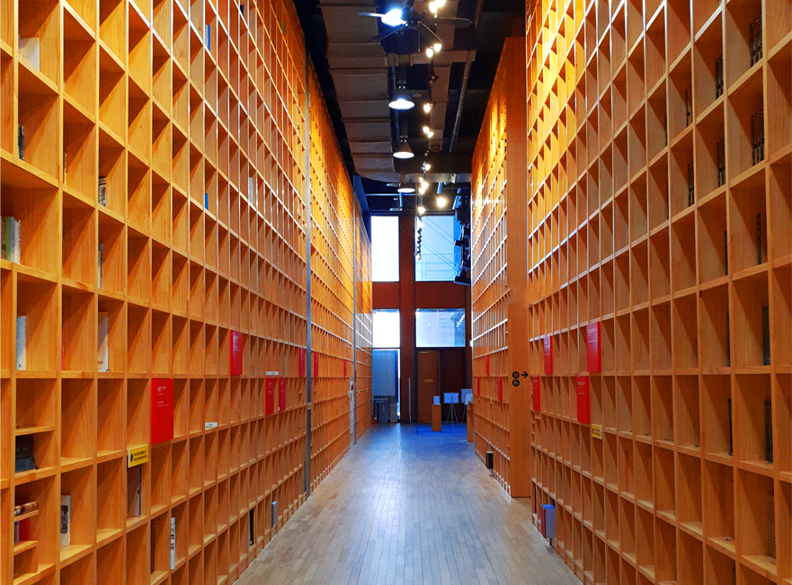

지혜의숲

아시아출판문화정보센터 1층에 위치하고 있는 지혜의 숲은 가치 있는 책을 한데 모아 보존 보호하고 관리하며 함께 보는 공동의 서재입니다. 지혜의숲은 출판도시문화재단이 2014년도에 문화체육관광부의 후원을 받아 조성한 이래 재단의 자체 재원으로 운영하고 있는 복합문화공간입니다. 출판도시문화재단은 출판단지조합이 출자하고 문화체육관광부가 설립을 허가한 비영리 재단법인입니다.

학자, 지식인, 연구소에서 기증한 도서를 소장한 공간입니다. 기증자가 평생 읽고 연찬한 책을 한눈에 살펴볼 수 있는 공유서재로서 학자와 지식인의 삶을 책을 통해 보여주는 공간이기도 합니다. 기증자의 연구 분야에 따라 문학, 역사, 철학, 사회과학, 자연과학, 예술에 이르는 다양한 분야, 시대의 인문학 도서를 만날 수 있습니다.